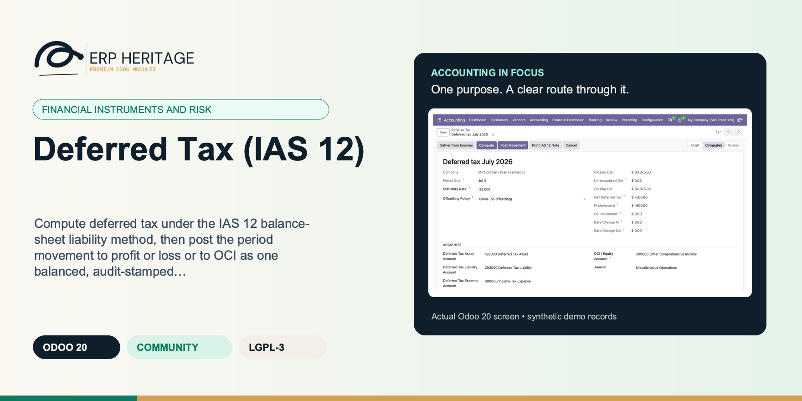
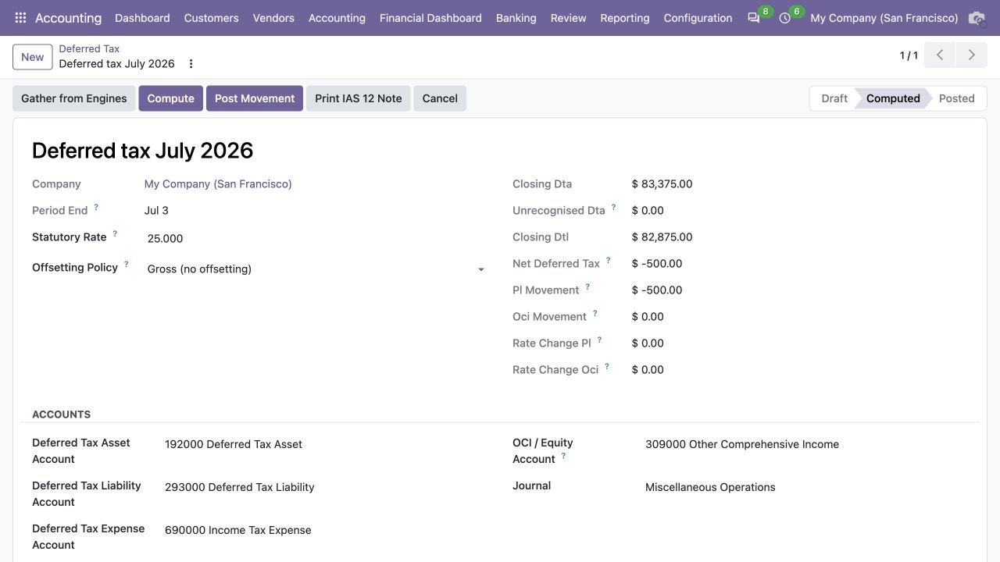
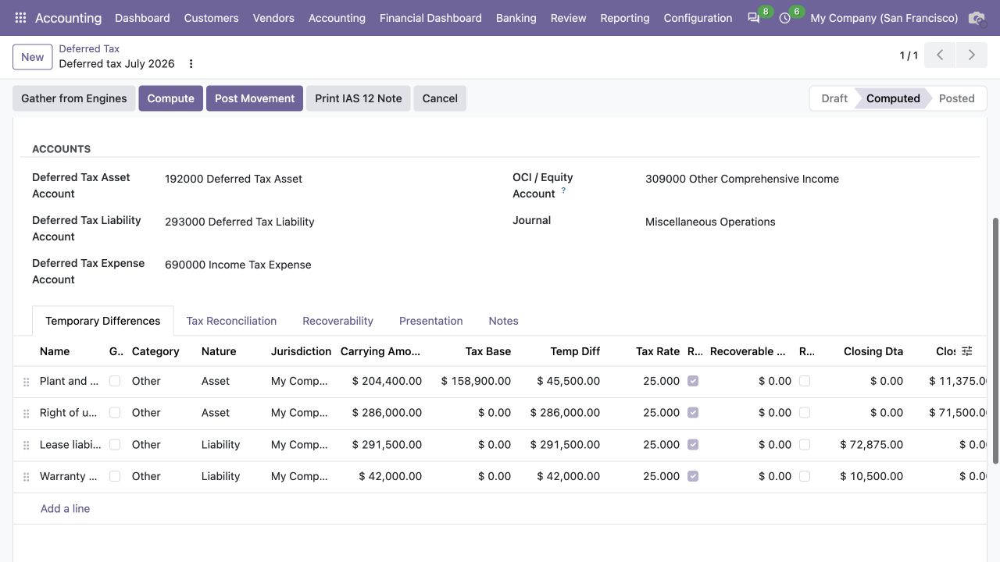
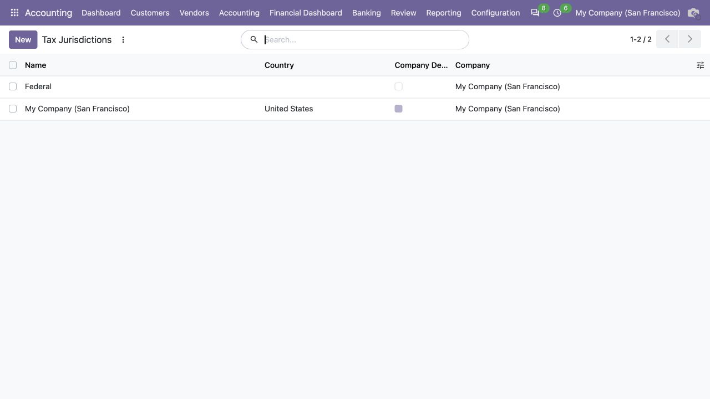
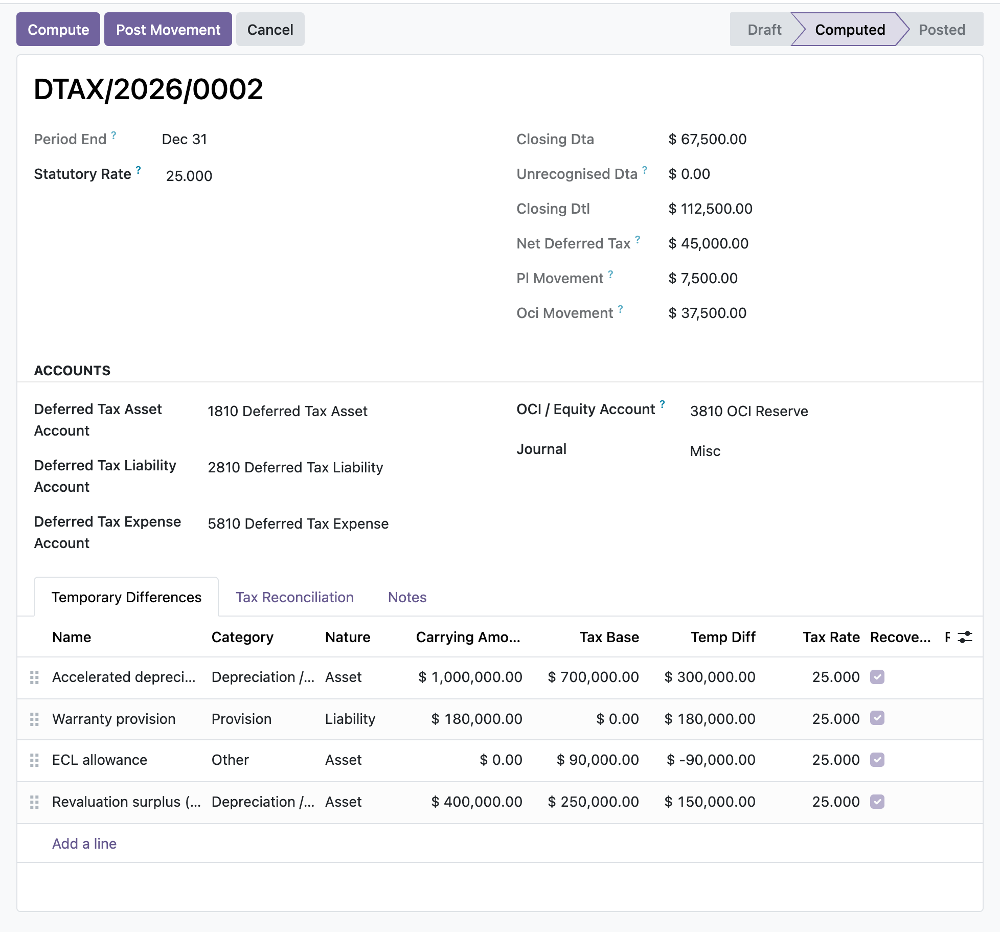

ERP HERITAGE / ODOO 20 COMMUNITY
Compute deferred tax under the IAS 12 balance-sheet liability method, then post the period movement to profit or loss or to OCI as one balanced, audit-stamped journal entry.
LGPL-3 · Odoo 20 · v20.0.1.1.8 · Module guide, setup, workflows and rollout checks
The purpose
This module computes deferred tax under the IAS 12 balance-sheet liability method. Each temporary difference is entered as a carrying amount and a tax base; the gap, classified taxable or deductible from the item's nature (asset, liability, or tax loss), is measured at the enacted rate resolved from a per-jurisdiction rate table at the reporting date (IAS 12.47), with a reasoned manual override and a statutory fallback. A run compares the closing position to the opening position, splits the movement into rate-change remeasurement versus origination (IAS 12.60(b)), and posts one balanced journal for the movement, recognising it in profit or loss except for lines flagged as OCI-related, whose movement routes to the OCI reserve (IAS 12.61A). Deferred tax assets are capped by line-level recoverable-profit ceilings, carryforward expiry dates, and a run-level projected-profit ceiling, with the unrecognised portion disclosed (IAS 12.81(e)). The run presents gross or net-by-jurisdiction positions (IAS 12.74) and builds the effective-tax-rate reconciliation as auto plus manual reconciling rows that always tie to the total tax expense (IAS 12.81(c)). Posting and reversal are gated to the EH Accounting Manager group and stamped for audit.
Inside Odoo 20
Captured from Odoo 20 Community using synthetic demonstration records. Configuration screens show the available workflow; external service connectivity still requires the relevant provider setup and validation.

Computed deferred-tax workpaper summarizes deferred assets, liabilities and the proposed movement before posting.
Captured 2026-09-22 from isolated Odoo 20 Community database with synthetic demonstration records. No external submission or live banking activity is represented.

Temporary-difference lines compare carrying amounts and tax bases with rates and recoverability.
Captured 2026-09-22 from isolated Odoo 20 Community database with synthetic demonstration records. No external submission or live banking activity is represented.

Company-scoped tax jurisdictions organize the deferred-tax assessment.
Captured 2026-09-22 from isolated Odoo 20 Community database with synthetic demonstration records. No external submission or live banking activity is represented.
Inside this module
Temporary difference equals carrying amount less tax base, classified taxable or deductible by nature, multiplied by the enacted rate. Assets, liabilities, and tax losses each follow the correct IAS 12.15-24 sign convention rather than a single flat formula.
Each line carries an opening position, and the run posts the closing-less-opening movement as one balanced entry. Deferred tax asset and liability legs are debit and credit natured, and the expense or OCI counterpart is the balancing plug, so the entry ties to the cent.
Once posted or reversed, the measurement fields on the run and its lines are locked at the ORM layer. Posting, reversal, and cancellation require the EH Accounting Manager group, and each action is timestamped with the acting user.
A deferred tax asset is recognised only to the extent of projected recoverable profit (IAS 12.24/34): the deductible difference is capped at the entered recoverable amount before the rate is applied, and the unrecognised portion is tracked separately for IAS 12.81(e) disclosure. A hard not-recoverable flag excludes the DTA entirely.
Each line compares its entered opening to the same difference's closing on the prior posted run, matched by name within the company, and raises a tie-out flag when they disagree so a keying error that would silently mis-state the movement is caught before posting.
Lines flagged as recognised in OCI have their movement routed to the OCI reserve rather than profit or loss (IAS 12.61A), and posting is blocked with an explicit message if an OCI line exists but no OCI equity account is configured.
Re-pointing a draft line's Run at a posted run, resetting a posted run to draft, or deleting a posted run are each blocked, so a plain user cannot lift the figure freeze on a GL-backed movement through a raw ORM write.
A run whose net movement is nil raises rather than posting an empty entry, and a missing asset, liability, expense, OCI account, or journal each surface a named, explicit error at post time.
From input to outcome
Maintain the applicable rate information and identify the temporary differences to be assessed. Gather carrying values, tax bases, enacted rates, recognition choices, opening balances and tax reconciliation inputs. Use a representative case with a known expected result so the team can separate configuration decisions from unexpected behaviour. Keep the supporting commercial or accounting evidence available during review.
Compute the deferred-tax asset and liability position and review recognition, offsetting and the period movement. Follow the record’s available actions in the order intended by the workflow. Review the selected company, relevant dates and any validation messages before continuing. If the source data changes, reassess the result against the updated evidence.
You open a deferred tax run for the reporting date, set the statutory rate, and list each temporary difference with its carrying amount and tax base: accelerated depreciation, a warranty provision, an ECL allowance, a revaluation surplus taken to OCI. Compute seeds any blank line rate from the statutory rate, rolls opening balances forward from the prior posted run, and flags any opening that does not tie out. You review the closing deferred tax asset and liability, the split of the movement between profit or loss and OCI, and the effective-tax-rate reconciliation. A manager posts, and one balanced journal is written and sealed. If a later period needs correction, a manager reverses it: the symmetric entry is posted a day after period end and both entries are preserved.
Inspect the proposed posting and effective-tax-rate reconciliation against the company’s supporting tax workpapers. Compare the outcome with the expected treatment for this case and record the reason for any difference that requires follow-up. Give exceptions an owner so they do not disappear inside a period-end spreadsheet.
Keep enacted-rate decisions and recoverability evidence under tax-team review; entered tax bases and judgements determine the calculation. Include the accepted operating example, configuration choices and unresolved dependencies in the handover. Review them when business policy, source data or the surrounding Odoo applications change.
Product views
Product screenshots supplied with this module. Records and amounts are illustrative; appearance can vary with your configuration and release.

Deferred tax run, computed
Business situations
Deferred Tax (IAS 12) is relevant to tax accountants and financial-statement reviewers who need to answer this question: What deferred-tax position results from carrying amounts, tax bases and the enacted rates entered for this close? Start with the process that creates the decision, identify its owner and agree what evidence the reviewer needs. A narrow pilot helps the team evaluate the supported workflow using its own accounting data before broadening access.
Use the module’s financial instruments and risk role as one part of a controlled close. Bring the relevant carrying values, tax bases, enacted rates, recognition choices, opening balances and tax reconciliation inputs to the review, then explain the result alongside the business event it represents. Establish which outputs become part of the reporting pack and which outstanding matters need a separate accounting decision.
Turn the business question into an acceptance case: What deferred-tax position results from carrying amounts, tax bases and the enacted rates entered for this close? Use one ordinary example and one relevant exception from the supported scope below. Ask the intended operator to prepare it and the reviewer to explain the result. Retain that accepted example with the deployment notes so future changes can be assessed against an understood process.
Before the first result
Confirm that the organisation needs the supported financial instruments and risk process described here. Identify the responsible tax accountants and financial-statement reviewers and write down the decision they expect the module to support. Use the limitations section to separate shipped behaviour from an integration, professional judgement or operational service that needs another owner.
Prepare carrying values, tax bases, enacted rates, recognition choices, opening balances and tax reconciliation inputs. Check the relevant records in the intended company and use dates that match the business event. Resolve missing accounting configuration before evaluating calculated output; plausible-looking totals do not establish that the chosen inputs or policies are correct.
This module declares Accounting Suite Base as part of its installation foundation. Its direct standard-Odoo dependencies are account, mail. Review the actual dependency set in the target database before a rollout, especially where another addon also extends the same accounting models, menus or posting actions.
Define who operates Deferred Tax (IAS 12), who reviews unusual results and who maintains configuration. Run the representative workflow below in a test database using the intended users. Confirm that users can reach the work they own and that the reviewer understands the available evidence before moving the process into live operation.
Workflow reference
The period-end computation for one company: enacted rates, gross or IAS 12.74 net presentation, recoverability, materiality-gated reconciliation, and a sealed movement journal.
One temporary difference with producer identity, jurisdiction, expiry, carrying amount, tax base, recognised and unrecognised tax effects, OCI route, and controlled opening roll-forward.
The on-screen and printable IAS 12.81(e)/(g) table groups gross deductible/taxable amounts and tax effects by type and expiry band; IAS 12.81(c) reconciliation cannot post above its documented materiality.
Posting preserves the reviewed Compute fingerprint, preflights accounting locks, and includes a balance-neutral opening reclassification when an explained offsetting policy change occurs.
Three-tier access (user, manager, auditor), manager-only posting/reversal/cancellation, and global multi-company rules cover runs, lines, reconciliation rows, jurisdictions, and enacted rates.
Accounting carrying amount of the asset or liability. For a tax loss / credit, enter the amount of the loss available.
Taxation authority whose enacted-rate table measures this difference (IAS 12.47). Defaults to the company jurisdiction, auto-created on first use. Under the net offsetting policy the run nets DTA against DTL per jurisdiction (IAS 12.74).
Enacted / substantively enacted tax rate applied to this difference, as a percentage. Compute resolves it in order: the manual override, then the jurisdiction rate table at the run's reporting date, then (only when still empty) the run's statutory rate. A value keyed here directly is preserved when no override or table row applies.
Overrides the jurisdiction rate table and the run statutory rate for this line on every compute, e.g. a difference taxed at a special-regime rate. Requires a reason. Zero means no override.
Whether the deferred tax asset is expected to be recovered (IAS 12.24/34). When unset, the DTA on this line is excluded from the closing position and the posting.
Projected future taxable profit available to recover this deductible difference (IAS 12.24/34). The DTA is recognised only to that extent: the deductible difference is capped at this amount before applying the tax rate. Leave at zero to recognise the full DTA (no profit constraint).
Date the tax loss / credit carryforward (or other deductible amount) expires under the tax law. A carryforward expired on or before the run's reporting date can no longer produce future deductions, so its deferred tax asset is derecognised and disclosed as unrecognised (IAS 12.36(a)). Empty means no expiry.
Set when the underlying item is recognised in other comprehensive income (e.g. revaluation surplus, cash-flow hedge reserve). The deferred tax movement then routes to OCI rather than profit or loss (IAS 12.61A).
Set when this line was pulled automatically from a producer engine (ECL, provisions, ...) by Gather from Engines. Re-running the gather replaces these lines; hand-keyed lines are untouched.
Technical producer model for an automatically gathered temporary difference. Together with Source Key this is the stable cross-period identity; display names may change.
Deferred tax asset NOT recognised because the deductible difference exceeds the projected recoverable amount, or the line is flagged not recoverable (disclosure, IAS 12.81(e)).
Deferred tax asset recognised on this line at the start of the period. The run posts only the movement (closing less opening).
Rate at which the opening balance was measured, as a percentage. Rolled forward from the prior posted run's applied rate, or keyed with a manual opening. Zero means unknown: no rate-change component is computed and the whole movement is treated as origination / reversal, the pre-remeasurement behaviour.
Portion of the period movement caused by remeasuring the OPENING balance at the closing rate (IAS 12.60(b)): opening temporary difference times (closing rate less opening rate). Signed on the net liability: positive increases the net DTL (a charge). Routed to profit or loss, or to OCI when the line is flagged Recognised in OCI (IAS 12.61A); disclosed separately from origination in the reconciliation.
Remainder of the period movement after the rate-change component: origination and reversal of temporary differences at constant rates, signed on the net liability.
Deferred tax asset carried forward from the prior posted run's closing position for the same difference. The opening should tie to this figure.
Set when a prior posted run exists for this difference and the entered opening does not tie to that run's closing position. A keying error in the opening silently mis-states the period movement, so investigate before posting.
Enacted / substantively enacted tax rate for the period, as a percentage. Fallback: a line resolves its rate from its manual override, then its jurisdiction's enacted-rate table at the reporting date, and only then from this rate. Also drives the expected tax in the reconciliation and the recoverability ceiling.
IAS 12.74 permits offsetting a deferred tax asset against a deferred tax liability only when the entity has a legally enforceable right to set off current tax assets against current tax liabilities AND both relate to income taxes levied by the same taxation authority on the same taxable entity (or on entities intending to settle net). Choosing the net policy asserts those conditions hold within each jurisdiction of this company: posting then books one net leg per jurisdiction per side, while the lines keep the gross detail for disclosure. Gross is the default and the historical behaviour. Keep the policy consistent across periods: the net movement is based on the line openings, so switching policy mid-stream requires a reclassification of the prior gross balances.
Required when the offsetting policy changes between posted periods. Explain the change in IAS 12.74 facts or policy; the movement entry will reclassify the opening DTA/DTL balances before landing on the current presentation.
Reserve that carries the deferred tax on OCI-related items. Required only when a line is flagged as recognised in OCI.
Total deferred tax asset not recognised because deductible differences exceed projected recoverable profit, or lines are flagged not recoverable (IAS 12.81(e) disclosure).
Set when at least one line's opening does not tie to the prior posted run's closing position. A keying error in the opening silently mis-states the period movement; investigate before posting.
Rate-change remeasurement of opening balances routed to profit or loss (IAS 12.60(b)): sum of the rate-change effect of the non-OCI lines, positive = charge. Feeds the reconciliation's rate-change row.
Rate-change remeasurement of opening balances routed to OCI (IAS 12.61A/63): sum of the rate-change effect of the OCI-flagged lines, positive = charge to OCI.
Deferred tax asset presented on the balance sheet under the run's offsetting policy: the gross closing DTA under the gross policy, or the sum of the per-jurisdiction net asset positions under the net policy (IAS 12.74).
Projected future taxable profit supporting recovery of the recognised deferred tax assets (IAS 12.24/34). At the statutory rate it gives the recognition ceiling; any closing DTA above the ceiling is disclosed as unrecognised and feeds the reconciliation's unrecognised row. Zero means no run-level constraint (line-level caps still apply).
Line-level eligible DTA not recognised after allocating the run-level ceiling, disclosed per IAS 12.81(e) on top of the individual-line unrecognised amounts.
Unrecognised deferred tax asset disclosed at the prior reporting date (line-level plus run-level). Rolled forward from the prior posted run when left at zero. The reconciliation's unrecognised row shows the period movement against this figure.
Tax effect of permanent differences (non-deductible expenses, exempt income), entered as a signed amount added to expected tax in the reconciliation.
Current tax expense for the period (from the tax return / BAS), entered so the reconciliation ties to the total tax charge.
Required accounting date for the controlled counter-entry. Posting fails closed if Odoo would shift this date because of a lock.
Digest of the reviewed run inputs, temporary differences, manual reconciliation rows and applicable enacted rates at the last Compute. Posting fails closed if it changed.
Date the rate was enacted or substantively enacted. A rate enacted after a run's reporting date is ignored by that run (IAS 12.47-48). Leave empty to treat the rate as enacted.
First day the rate applies. A run resolves the row with the latest effective date on or before its reporting date.
Illustrative implementation exercise. An asset’s accounting carrying amount differs from its tax base at period-end. Enter the supported difference and enacted-rate information, then inspect the resulting deferred-tax position and recognition choices. Carry the reviewed opening position into the next close and focus on the movement needed to reach the new closing amount. Add a second item that raises a recognition or offsetting judgement and document the tax team’s conclusion. Compare the proposed posting with the workpaper and effective-tax-rate reconciliation. A complete input table can still produce the wrong accounting result if the entered tax base, rate or recoverability assessment is not the approved one.
Questions before rollout
It is designed for tax accountants and financial-statement reviewers. Its central business question is: What deferred-tax position results from carrying amounts, tax bases and the enacted rates entered for this close? The listing describes the shipped operating scope and the decisions that remain with the organisation. Evaluate it against your own records and review process, rather than treating the module name as a promise to cover every scenario in that accounting area.
Have carrying values, tax bases, enacted rates, recognition choices, opening balances and tax reconciliation inputs ready, together with the person who owns the related accounting policy. Maintain the applicable rate information and identify the temporary differences to be assessed. A known example makes it possible to check the result and resolve configuration questions before the process is repeated across more records or companies.
Inspect the proposed posting and effective-tax-rate reconciliation against the company’s supporting tax workpapers. Keep the relevant source evidence with the output and be explicit about company, date and policy choices. The most useful review asks whether the result follows from the business inputs, not only whether the operation completed without a validation message.
It belongs to the financial instruments and risk family. Its declared custom dependency foundation is Accounting Suite Base. Installing the complete suite also brings other operating and specialist modules; using this focused module should be evaluated against its own dependency list and scope. Optional services still need their own configuration and agreement where applicable.
It gathers differences only from installed IFRS producers that implement the documented hook; other differences remain explicitly entered and reviewed. Keep enacted-rate decisions and recoverability evidence under tax-team review; entered tax bases and judgements determine the calculation.
No. Deferred Tax (IAS 12) provides the specific records, calculations or workflow described in this listing. The organisation remains responsible for its source information, accounting choices, supporting evidence and review. Where the process uses an estimate, a contract assessment or an external service, appoint the appropriate owner before relying on the output.
Scope and requirements
It gathers differences only from installed IFRS producers that implement the documented hook; other differences remain explicitly entered and reviewed.
Producer rows roll forward by server-owned source identity; hand-entered legacy rows use their frozen line name as the natural key.
Each jurisdiction carries an enacted-rate history and lines can use a reasoned manual override; graduated schedules within one difference still require separate lines.
It does not prepare or lodge any tax return; the current tax expense used in the reconciliation is entered from your return or BAS.
It supports multiple company-scoped tax jurisdictions but does not perform transfer-pricing calculations or group tax-consolidation eliminations.
It computes in the company currency only and does not translate deferred tax on foreign operations.
Standards references describe the accounting subject addressed by the module. They do not establish certification, statutory filing acceptance or suitability for every jurisdiction. Your finance team owns its assumptions, accounting policies and review.
Installation scope
Odoo installs the following direct dependencies automatically. Additional dependencies can be brought in by those modules. Related modules in the wider catalogue are optional unless they appear in this dependency chain.
Shared reporting engine for the ERP Heritage Odoo 20 Community accounting suite, providing a reproducible report-execution audit log and a move-version result cache. Append-only audit log of every report render with user, timestamp, the full options snapshot, runtime, and a SHA-256 result hash for XLSX and PDF output, plus a multi-company analytic-aware parameterised SQL builder with no raw user input in SQL, a three-tier User/Manager/read-only Auditor privilege model, and a currency-aware XLSX writer. Odoo 20 Community accounting reporting engine, reproducible financial report audit trail, move-version report cache invalidation, multi-company parameterised SQL builder, append-only audit log, read-only auditor role, SHA-256 report hash compliance, currency-aware XLSX export, analytic-aware journal item aggregation.
Included dependency: eh_account_base. The shared reporting engine under the ERP Heritage accounting modules: an append-only render audit log, precise per-company cache invalidation, and a whitelist-only parameterised SQL builder.
Odoo Community dependency required by this module. Its own dependencies and configuration remain part of the installation scope.
Odoo Community dependency required by this module. Its own dependencies and configuration remain part of the installation scope.
Acceptance guide
The following are recommended rollout checks, not claims of additional built-in features. Apply the checks relevant to this module and retain evidence of your own results.
Select a recent, closed period that your finance team understands well. Keep its approved source documents, ledger totals and existing working papers available. Reproduce that period in a staging database before working on current transactions. A familiar period makes differences visible: you can distinguish an opening balance problem from a configuration choice, a timing difference or a genuine defect. Agree which person owns each discrepancy and what evidence will close it. Successful installation is the starting point; a repeatable business outcome is the acceptance criterion.
Write down the output your team needs from this module: a reviewed transaction, an exported file, a reconciled balance, an approved schedule or an operational queue. Identify who prepares it, who reviews it and who relies on it next. Make the scope concrete with one company, one reporting period and a small representative document set. Include an ordinary case and an exception. This keeps the evaluation focused on the business decision instead of the number of available screens, and gives reviewers a consistent way to compare the new workflow with their current process.
Use the Odoo 20 edition of the module and its dependencies together. The manifest defines what Odoo installs automatically; a feature mentioned elsewhere in the wider product family is not automatically included. Review the dependency guide on this page before enabling the complete suite, especially where your deployment also uses Sales, Purchase, Inventory or website components. Confirm that your hosting arrangement accepts custom server modules and their Python requirements. Keep a copy of the installed module versions with your acceptance record so a later update can be checked against the same baseline.
Check the companies, currencies, fiscal periods, journals, accounts and partner records used by your sample. Confirm that account purposes agree with your chart of accounts and that archived records are not being selected inadvertently. Review company-specific settings while the intended company is active. Where a workflow needs bank details, analytic dimensions, product information or payment terms, validate those inputs with their owner. Clean master data reduces repeated exceptions and makes it easier to investigate the exceptions that remain. Keep the preparation list short enough for someone else to repeat it.
Decide which source establishes the opening position before introducing new transactions. Save the source date, company, currency and supporting reconciliation. If a module maintains a schedule or a working-paper balance alongside the ledger, document how that opening amount should tie to the general ledger. Do not use balancing entries to hide a difference during the pilot. Classify the difference, correct its source and rerun the comparison. The resulting trail is useful both for your internal reviewer and for support if an unexpected calculation needs investigation.
Choose named users for preparation, review and administration. Confirm their practical access by signing in as those users in staging, rather than relying on an administrator's view of the menus. A visible menu does not replace model access or record restrictions, and a hidden menu does not by itself prove that data is protected. For your own acceptance check, verify the specific business operations each role needs. If your organization requires separation of duties, include that policy in the rollout criteria and check the actual workflow against it before granting production access.
Run the sample with the intended company selected, then repeat the relevant navigation and search checks as a user assigned to a different company. Record which company owns each source document and each generated result. For users who work across entities, confirm how their allowed-company selection affects totals and available records. Investigate any cross-company difference before it becomes a month-end problem. Group-level work and company-level work have different scopes; use the appropriate module and document the scope on the review evidence instead of assuming one screen represents both.
Include a company-currency case and, where relevant to the module, a foreign-currency case. Check the date used to select exchange rates and keep the rate source available to the reviewer. Add a transaction near a period boundary so the team can see whether document date, accounting date or another business date drives the result. Test decimal precision with a small amount as well as a large one. Record the expected rounding treatment. These checks turn vague differences in totals into questions that can be resolved against your accounting policy.
Choose one result and follow the available links or record references back to the original business document. Compare its company, partner, amount, currency and dates with the expected source. Where the workflow creates a journal entry, inspect the accounts and balancing lines before relying on an aggregate report. Where it exports a file, compare the file's records with the selected batch. Save a small, intelligible evidence set instead of an indiscriminate screenshot archive. A reviewer should be able to explain what happened without needing the original preparer beside them.
If this module creates or updates accounting entries, separate preparation from the decision to post in your operating procedure. Inspect the proposed outcome, resolve missing configuration and confirm the intended period before using a posting action. If the module does not post entries, identify the equivalent commitment point, such as sending a file or approving a review record. Record who is allowed to make that decision. The page describes the module's supported workflow; your team still needs an operating policy that fits its accounting responsibilities and approval structure.
From pilot to production
Use a deliberately incomplete sample in staging: a missing required setting, an unsuitable date or a source document that is not ready for the next step. Observe the actual message and the record state that remains. Correct the input and repeat the operation. Check that the recovered result agrees with the ordinary successful case. For transactions already committed, use the supported correction or reversal workflow rather than editing database records. Your acceptance record should explain how staff recover from mistakes, because that is part of day-to-day usability, not an unusual administrative task.
Repeat an import, calculation, preparation step or button action only where the documented workflow permits it. Confirm whether the expected behavior is a recalculation, a refusal, a new version or reuse of an existing record. Do not infer universal duplicate prevention from one successful test. Record the behavior of the actual operation your team will use and include it in staff guidance. A small, identifiable sample makes duplicate records easy to spot and avoids creating a misleading acceptance result from a large batch with poorly understood contents.
Where accounting dates are involved, inspect your company's lock settings and the role that can change them. Include one sample dated inside a closed period and one in the open period, then observe the supported behavior with normal finance access. Agree how the team will handle late documents and approved corrections. The goal is a clear route for legitimate work that preserves the reason the period was closed. Record the policy alongside the module's workflow so operators know when to stop and involve the person responsible for the close.
If the module produces reports or exchange files, have the intended recipient inspect a sample. For a finance report, check the filters, company, dates, currency, labels and totals. For a bank or service file, use that recipient's own validation or test process before a production submission. Generating a structurally valid file does not establish acceptance by every provider. Keep the exact sample and any recipient feedback with the rollout record. Where no export is provided, agree which supported screen or linked record serves as the handover evidence.
Identify any step that depends on a separately configured provider, connector, credential or commercial service. Confirm the exact adapter and its requirements before scheduling a live demonstration. Some family modules provide deterministic rules or file preparation without a live external connection; their usefulness should be evaluated on that basis. Test a provider failure in staging only when the adapter offers a safe test route. Make it clear who manages credentials and provider subscriptions, and who should be contacted when an external service is unavailable.
Time the operations your staff will actually repeat, using a dataset that resembles your expected company, date range and document volume. Record the environment and sample size beside the timings. Include navigation, filtering, preparation and review rather than quoting a single best-case page load. This page makes no universal performance promise: network latency, database size, customizations and infrastructure affect results. Use measurements to choose a practical rollout batch size and to identify any operation that needs investigation before more users join the workflow.
Give staff a short exercise that begins with a business situation and ends with a reviewed result. Include the expected amount or state, the navigation route, the point at which a reviewer becomes involved and the supported correction route. Let operators explain why their result is correct. Add only the settings and exceptions relevant to their role. A concise internal playbook built from your own pilot is easier to maintain than a large collection of unannotated screenshots, and it helps new users understand the relationship between this module and the rest of Accounting.
Capture the module version, Odoo version, affected company, operation, exact message and a minimal sequence of steps. Use redacted sample documents when sharing evidence outside your organization. State the expected result and the actual result separately. Include the date filters and role used, because the same record can look different with another scope or set of permissions. Never include passwords, API tokens or private keys in a support message. Good reproduction details allow the problem to be investigated without guessing at your business setup or asking staff to repeat a full close.
Before deploying an update, back up the database and filestore together, and restore that backup into an isolated environment. Apply the module update there, then repeat the key pilot scenarios using the saved acceptance record. Check that existing documents remain readable and that the expected actions and menus still lead to the right workflow. Include one newly created record as well as an older one. Keep a rollback plan appropriate to your deployment and confirm that the backup can be restored before scheduling the production change.
Agree the release criteria before the pilot ends: expected financial results, access boundaries, supported corrections, output acceptance and owner sign-off. List unresolved items with their business impact instead of treating every observation as a blocker or dismissing it as cosmetic. Start production with a manageable scope and a named reviewer. Keep the first cycle's evidence so that later enhancements can be assessed against a concrete baseline. App-store descriptions help you select and understand the module; acceptance in your own configuration establishes whether the workflow is ready for your team.
Connected capabilities
These related modules explain how this workflow connects to the wider accounting process. Only the dependencies declared above are installed automatically. Choose optional additions for a specific business need.
The shared engine that powers the ERP Heritage accounting modules for Odoo 20 Community. It auto-installs as a dependency of any ERP Heritage accounting module, so you do not need to install it by hand.
Expected Credit Loss measures the loss allowance on trade receivables under IFRS 9. Each run is scoped to one legal entity and carries a provision matrix of contiguous, non-overlapping ageing buckets; population reconstructs point-in-time receivable residuals at the reporting date and fails closed when a matrix band or installed exposure provider is incomplete. It computes the closing allowance, and posting recognises only the movement from the opening allowance in one balanced entry: an increase debits impairment loss and credits a dedicated non-receivable loss-allowance contra account, while a decrease reverses it (IFRS 9.5.5.8). A general 3-stage model (EAD, LGD, 12-month and lifetime PD), an explicit keyed-versus-defaulted Stage 3 PD policy, probability-weighted scenarios and optional present-value discounting are supported. Foreign-currency write-offs preserve source-currency evidence. Posting and reversal are manager-gated; reversal uses an explicit open accounting date, and a computed or posted run is frozen until its controlled revision or reversal workflow.
An IAS 19 accounting layer for defined benefit valuations and defined contribution accruals. Actuarial results are imported inputs; the module has no actuarial engine. It computes the ledger mechanics for net interest, service cost, settlements, non-recycling OCI remeasurements, the asset ceiling, tied obligation and plan-asset rollforwards, and one sealed entry per valuation. A rendered IAS 19.140-141 disclosure schedule presents the recognised liability or asset net per plan. Short-term benefits, other long-term benefits, termination benefits, and reimbursement rights are explicitly outside this module's scope.
This module records and posts fair value under IFRS 13 with IFRS 9 classification. Each item (Fair value item (IFRS 13)) is classified in the three-level hierarchy by input observability, its valuation technique is captured as market, income or cost approach, and for Level 3 the significant unobservable inputs are documented. An IFRS 9.4.1 engine derives the classification from a structured SPPI questionnaire (fixed dates, solely principal and interest, no leverage, no contingent returns) and the business model (hold to collect, hold to collect and sell, other): amortised cost, FVOCI debt, FVOCI equity election or FVTPL, with the P&L/OCI routing derived from the classification rather than chosen by hand, and nonsense combinations blocked (a liability cannot take the equity election, a derivative is always FVTPL, the election is irrevocable once posted). Remeasuring posts the change from the current carrying amount to fair value in one balanced entry and rolls the carrying amount forward. Derecognising posts the disposal entry and, atomically, settles the accumulated OCI reserve: FVOCI debt recycles it to profit or loss, an FVOCI equity election transfers it within equity to retained earnings and never through profit or loss. The Level 3 roll-forward reconciliation (IFRS 13.93(e)) can be ledger-fed from the posted entries and cannot be closed unless its closing balance ties to the fair value, and a per-item sensitivity table (input shock times elasticity) produces the IFRS 13.93(h) quantitative disclosure.
A dedicated IAS 37 provision register for Odoo 20 Community. Each provision is recognised at the present value of the undiscounted best estimate, posting a debit to the expense account and a credit to the provision liability. Where the time value of money is material, a pre-tax discount rate and a settlement horizon discount the estimate, and the Unwind Discount action accretes the carrying amount towards the undiscounted figure by posting the period finance cost. Remeasure books a change in estimate through profit or loss, Utilise settles expenditure against the liability, and Reverse writes back a provision no longer required. Contingent liabilities and contingent assets are held for disclosure only and any attempt to post them is refused. Posting is gated to the EH Accounting Manager group and every generated journal entry is sealed against edit.
A dedicated IFRS 2 share-based payment engine for Odoo 20 Community. Plans define the settlement mode, vesting terms and condition kind; grants under a plan carry the instruments, the grant-date fair value and an updatable forfeiture estimate. Period runs compute the cumulative expense per IFRS 2 and post the period delta as a sealed journal entry: equity-settled awards accrue grant-date fair value times the instruments expected to vest times the vested fraction (each graded tranche over its own vesting period), estimates true up through the current period, non-market failures reverse in full while market-condition failures never reverse once service is rendered, and cash-settled awards remeasure the liability to current fair value each period until settlement. Beneficial modifications spread their incremental fair value over the remaining vesting period, cancellation accelerates the unrecognised balance immediately, and a built-in valuation helper prices options with Black-Scholes or a Cox-Ross-Rubinstein binomial tree. The plan carries an IFRS 2.45 rollforward of granted, forfeited, exercised and expired instruments with the weighted average exercise price. Posting is gated to the EH Accounting Manager group and every generated journal entry is sealed against edit.
ERP Heritage Community Accounting Pro installs a fixed collection of 50 direct accounting dependencies. Together with the suite itself and the transitive EH EDI Core foundation, its custom-module closure contains 52 modules. The collection brings reporting, reconciliation, payments, receivables, approvals, specialist accounting, group work and close controls into one Community installation. Its value comes from connecting those processes and their evidence; adoption still requires deliberate company configuration, accounting ownership and review. Australian BAS is available separately and installs the suite as its accounting foundation.
ERP Heritage
Start with the workflow, setup and acceptance guide above. For implementation or support, share your Odoo version, module version, business scenario and a redacted example. Keep credentials and personal data out of support messages.
Published by ERP Heritage. Odoo is a trademark of Odoo S.A.; this independently developed application is not an Odoo S.A. product or endorsement.
Package: eh_account_deferred_tax · Release: v20.0.1.1.8 · License: LGPL-3.